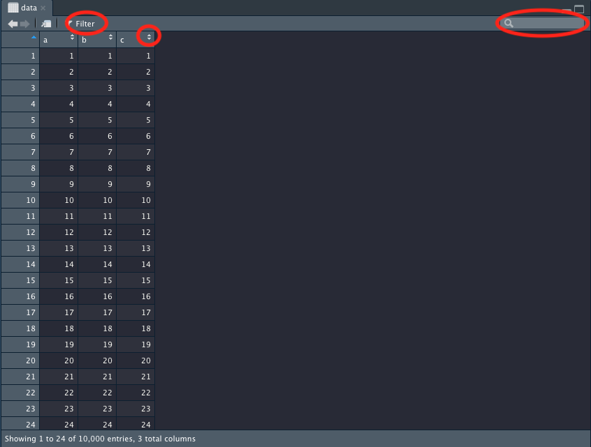
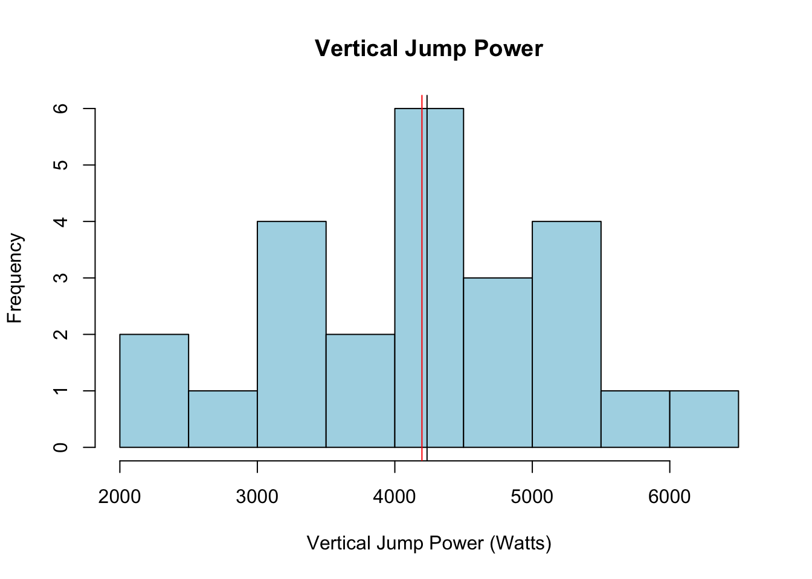
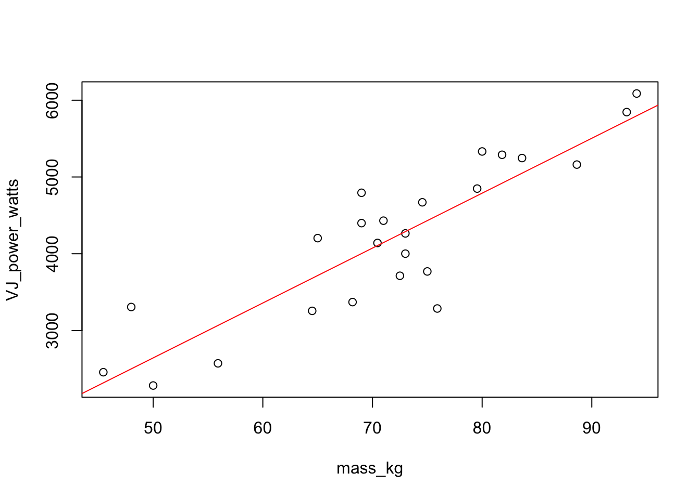

5 Describing and Visualizing Data
In this chapter we’ll work through a few examples of viewing, summarizing, and visualizing data. We’ll avoid importing files to make it as easy as possible to follow along.
Viewing Data
First, we’ll read in the powerlifting.csv file in the data folder.
After running the code above, you should see an object called data under the Environment tab in the upper right pane of RStudio. If you click on the white grid icon, RStudio will display the data in tabular form.
In this tabular view you can filter columns, arrange columns by ascending or descending values, and search values.

Another way to get the feel for an entire dataset is with the str() function. The benefit of the str() function is that the variable type is also displayed.
'data.frame': 24 obs. of 6 variables:
$ subject : int 1 2 3 4 5 6 7 8 9 10 ...
$ sex : chr "M" "M" "M" "M" ...
$ self_ID : chr "endurance" "power" "power" "endurance" ...
$ mass_kg : num 65 80 71 64.5 73 ...
$ VJ_power_watts: num 4203 5332 4431 3256 4001 ...
$ WG_power_watts: int 809 995 856 595 707 956 870 966 1100 1188 ...If you’re only interested in viewing the first few rows or last few rows of data you can use the head() and tail() functions, respectively:
subject sex self_ID mass_kg VJ_power_watts WG_power_watts
1 1 M endurance 65.00000 4203.498 809
2 2 M power 80.00000 5332.476 995
3 3 M power 71.00000 4430.985 856
4 4 M endurance 64.50000 3256.266 595
5 5 M endurance 73.00000 4001.481 707
6 6 M power 81.81818 5289.559 956
subject sex self_ID mass_kg VJ_power_watts WG_power_watts
19 19 F power 48.00000 3306.285 540
20 20 F power 75.00000 3769.716 618
21 21 F power 75.90909 3286.867 752
22 22 F endurance 55.90909 2572.519 622
23 23 F endurance 50.00000 2283.564 492
24 24 F power 70.45455 4140.660 951Sometimes it’s useful/convenient to access certain attributes of the data frame, such as the column names. A few of the functions for accessing attributes are provided below.
Data Summaries
One of the quickest and most useful ways to produce a data summary is with the summary() function. This function is versatile and works well with both continuous and categorical data:
subject sex self_ID mass_kg
Min. : 1.00 Length:24 Length:24 Min. :45.45
1st Qu.: 6.75 Class :character Class :character 1st Qu.:67.39
Median :12.50 Mode :character Mode :character Median :72.75
Mean :12.50 Mean :71.72
3rd Qu.:18.25 3rd Qu.:79.66
Max. :24.00 Max. :94.09
VJ_power_watts WG_power_watts
Min. :2284 Min. : 373.0
1st Qu.:3354 1st Qu.: 621.0
Median :4234 Median : 849.0
Mean :4197 Mean : 805.5
3rd Qu.:4927 3rd Qu.: 939.8
Max. :6087 Max. :1188.0 For R to correctly interpret the categorical variables in this data frame, like sex and self_ID, the variables must be of the factor variable type. Currently these variables are listed as character. They can be converted to factors with the as.factor() function. We can then use the summary() function after converting the variable.
F M
8 16
endurance power
11 13 You can also create a contingency table of the counts at each combination of factor levels with the table() function:
endurance power
F 3 5
M 8 8More than two variables can be used, too. Similarly, you can create conditional proportions by passing the table created to the prop.table() function:
endurance power
F 0.1250000 0.2083333
M 0.3333333 0.3333333Below are some more descriptive functions, and you can probably guess what each of them does.
Missing Data
In the examples above, none of the data contained missing values, which made the data summaries easy to calculate. Missing data can be handled in many different ways, and selecting the most appropriate method is beyond the scope of this book. Instead, we’ll only cover how to find and omit observations with missing data. First we’ll create a data frame in R that contains NA values:
data2 <- data.frame(Col1 = c(NA, 1, 21, 34, NA),
Col2 = c(23, 34, 34, 12, 56),
Col3 = c(NA, 2, 12, 43, 12))
data2 Col1 Col2 Col3
1 NA 23 NA
2 1 34 2
3 21 34 12
4 34 12 43
5 NA 56 12You can use the is.na() function to assess if a value is missing in a data frame or not. For example:
Col1 Col2 Col3
[1,] TRUE FALSE TRUE
[2,] FALSE FALSE FALSE
[3,] FALSE FALSE FALSE
[4,] FALSE FALSE FALSE
[5,] TRUE FALSE FALSEWhat you get in return is TRUE and FALSE values. If the value is TRUE, that means there is an NA value in that location. This might not be particularly helpful, though, if you have a large data frame. Instead, it might be more useful to have the count of NA values returned. To do this, we could use the is.na() function wrapped inside of a sum() function:
[1] 3You might want to know how many NA values are in a specific column rather than the entire dataset. Selecting just one column from a data frame is a very common task, and one way you can do this is with the dollar sign, $:
[1] 2A quick way to get the missing values for all columns of a data frame is with the colSums() function:
Col1 Col2 Col3
2 0 1 You can omit all missing values in a data frame with the na.omit() function:
Col1 Col2 Col3
2 1 34 2
3 21 34 12
4 34 12 43The “opposite” of the na.omit() function would be finding and listing all the rows that do contain missing values, and that’s what the code below accomplishes:
Col1 Col2 Col3
1 NA 23 NA
5 NA 56 12Recall from Chapter 2 that brackets ,[], are used to subset in R. For example, if you wanted the 5th row and 3rd column returned from a data frame, you could do this by subsetting the data frame like so: data[5,3]. The first item within the bracket refers to the row number, and the second number refers to the column number. If you don’t put any numbers within the brackets, data[,], then everything is selected (the entire data frame). Going back to the example above, you can see that data2 is being subsetted by the rows. complete.cases() is a function similar to na.omit(), where the NA values are not included. Notice that there is an exclamation point, !, in front of the function. This means that instead of returning the cases that are complete, what’s being returned is the cases that are not complete from the data frame. So, we’re subsetting data2 by its rows, where the incomplete cases are returned, and all the columns are selected. If that was confusing, that’s okay!
You might have noticed that you can select a column in R like this:
data$Col3, and also like thisdata[ ,3]. There are almost always multiple ways to accomplish something in R, and both ways work equally well.
Let’s try computing the mean for the first column of the data2 object which contains missing values:
[1] NAAs you can see, NA is returned. This is because Col1 contains missing values. Luckily the mean() function has an na.rm argument, which stands for ‘not available, remove’. We can set this argument to TRUE, so that missing values will be removed when computing the mean:
[1] 18.66667Visualizing Data
There are entire books written about visualizations in R. In fact, there are entire books written about visualizations in R using one specific package! Here, we just wanted to cover a few types of plots and plotting features that can hopefully be of use when analyzing data.
Histogram
You can make histograms with the hist() function. All you need to do is select the column to plot, which in this case is data$VJ_power_watts, and the rest will be done for you:
You could then change the color and labels, create a title, add vertical lines indicating the mean and median (which can each have their own color), change the bins, edit the axes, change the border color, and much more. This is just to give you an idea, in case you’d like to create more complete plots in R.
hist(x = data$VJ_power_watts,
col = "lightblue",
xlab = "Vertical Jump Power (Watts)",
main = "Vertical Jump Power",
border = "black")
abline(v = mean(data$VJ_power_watts), col = "red")
abline(v = median(data$VJ_power_watts), col = "black")
Scatterplot
You can use the plot() function to make scatter plots or various other types of plots. Simply pass your data frame object to the function and R will plot all of the relationships.
Rather than using all of the data, you can select the relevant variables by subsetting:
In the code above, the columns 4:6 were selected, which are the columns shown in the plot. You could then color the points by a categorical variable, such as the self_ID variable, which is a variable indicating whether a subject self-identifies as more of a power or endurance athlete. Remember that in order for this to work, the self_ID column needs to be converted to a factor.
If you wanted to plot the bivariate relationship between two of the variables, you would simply select two of the columns instead of three. Similar to the vertical lines in the histogram plot, you can add the slope and intercept to a plot with the same abline() function. These values were created by performing a linear model and then grabbing the coefficients from the model.
plot(data[4:5])
intercept <- lm(VJ_power_watts ~ mass_kg, data = data)$coeff[1]
slope <- lm(VJ_power_watts ~ mass_kg, data = data)$coeff[2]
abline(coef = c(intercept, slope), col = "red",)
Barplot
You can make bar graphs by using the table() function used earlier in conjunction with the barplot() function.
You can have the bars side-by-side instead of stacked by setting beside = TRUE. Notice that you can also generate legends for your plots with the legend() function and then coloring them accordingly.
Boxplot
Boxplots can be created with the boxplots() function. The formatting for this function may seem a little strange. For the formula argument, you’ll first list the y variable followed the x variables. The x variables will be separted by a plus sign. This function automatically converts the sex and self_ID columns to factors for us.
boxplot(formula = VJ_power_watts ~ self_ID + sex,
data = data,
col = c("lightcoral", "lightgoldenrod", "lightblue", "lightgreen"))You can view the list of available color options for plots by typing
colors()into the console.